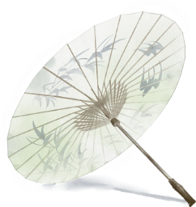
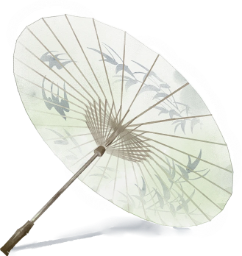

起源
泸州油纸伞起源于明末清初，据清光绪八年壬午（1882年）《泸县志~卷第三》载：“泸制（桐油）纸伞，颇为有名。崇义分水岭亦多此者，而已分水岭所致最佳。近有美美，工作益精巧。”由此可见，至少在清代，分水油纸伞已在泸州城乡广泛运用。
上世纪中

二十世纪四、五十年代，是泸州油纸伞的“黄金时期”。特别是二十世纪40 年代晚期至50 年代初期，靠近泸州小市码头的珠子街是当时泸州的“油纸伞一条街”。极盛时期，泸州境内共有大小油纸伞生产厂家100 多家，从业人员上万人，主要集中在江阳区蓝田、泰安、沙湾、分水、弥陀、小市等地，年产纸伞2000 万把。history上泸州主要以制作雨具的“大红伞”为主。
上世纪末
二十世纪70 年代以后，随着钢架伞与布伞的的普及，实用方便的钢架伞逐渐取代了油纸伞，以前从事油纸伞生产的人纷纷转行。至二十世纪90 年代，只有为数不多的人在进行生产。
本世纪初
2006年9月，分水油纸伞列入泸州市非物质文化遗产保护名录。2007年3月，四川省将分水油纸伞列入省级非物质文化遗产保护名录。2008年3月，泸州市将油纸伞申报国家级非物质文化遗产保护对象成功获得批准。2008年江阳区政府把“泸州油纸伞制作工艺”申报为“国家级非物质性文化遗产”
油纸伞寓意
“油纸” 谐音 “有子”
寄托着中国人传统的
多子多福的理念
伞的繁体字“傘”
五个“ 人 ”字寓意五子登科
竹做的伞柄象征节节高升
圆形的伞面则象征团圆平安
伞之外形顶天立地
蕴含中国古典文化精髓
——“天人合一”的文化概念
伞骨同聚一轴
象征团结与力量
是中国古典高雅美的标志之一。
中国传统婚礼上
新娘出嫁下轿时
媒婆会用红色油纸伞遮着新娘以作避邪
老人喜好象征长寿的紫色伞
送葬时则要用白色伞
宗教庆典中
常看到将油纸伞作为遮蔽物
撑在神轿上
此是取其圆满的意思
作为人们遮日避雨、驱恶避邪的象征
油纸伞是中国传统工艺品之一
世界上最早的雨伞
使用历史已有一千多年
由手制 ,部材天 ,中古劳人智的晶
它纯工成全取于然是国代动民慧结
南典纸制工是纸中表
江古油伞作艺油伞代
水纸传制技被家"国间艺活"
分油伞统作艺专誉为中民伞的化石